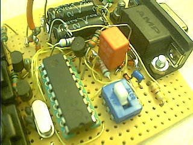
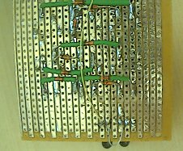
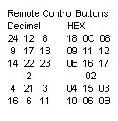
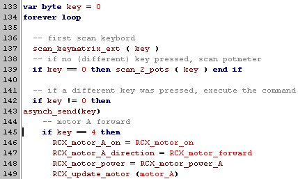
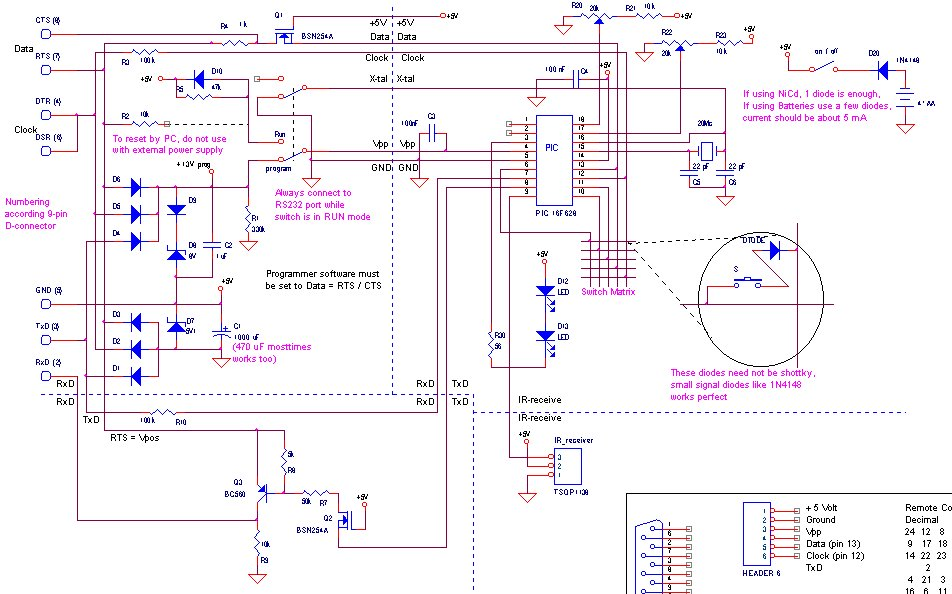

November 2002
RCX remote control 2
For older versions see: version 1
Inspired by some applications of the 16F84 PIC, we came up with the idea to make a IR-module, which is capable of doing all the InfraRed tasks we could imagine with the RCX.
Until now we've build a RCX remote control unit, with some advantages over the standard Lego remote control.
A lot of time was spent in selecting / developing the right tools to control the PICs. Having the right tools and understanding them, you can quiet easy and very fast create all kinds of electronics with PICs (not only for the RCX). Still remains, using PICs is not for beginners in electronics, you need to have some knowhow of electronics to read the manuals (some IO-pins are quiet complex) and some experience in programming (for instance a language like NQC).
ERATTA: in the version before 23-12-2001, the program data and clock lines on the PIC were exchanged.
Advantages over the Lego remote control 
By (almost) no hardware extensions, just by downloading other software you can give the device more and / or other functionality.
|
The total remote control. As you can see I haven't found a good enclosure for it. Also I'm looking for a good place for the potmeters. |
 The electronics around the PIC, including fast serial port and NOP programmer. Take some more space than I used, otherwise testing is quiet difficult. |
 The matrix diodes are placed on the backside. |
|
The circuit on the right shows the basic remote control. The lines going out of the diagram can be omitted, they are for other devices like the programmer, fast serial communication and IR-receiver. Before you decide to build this circuit, look at those extra interfaces first, because they can be added by almost no extra energy and costs. D11 and R6 should not be mounted if you include the programmer in the circuit. D20 has 2 functions, protecting the circuit against the wrong polarity. The second function (only if programmer is included) is to prevent current flowing through the zenerdiode D7 (see programmer) D12 and D13 are of course the IR-leds. |
|
|
The keycodes depends on the physical layout of the key and diode placing. I found it quiet difficult to give the exact schematic without errors. Therefore a more convenient way is to mount the keys and diodes and run the program with the serial debugger, and you'll find the right key codes. |
 |
|
A more extended decription of the library files can be found here. |
|
|
On the right is the start of the main program. If you're familiar with NQC, you can see the close resmblance. The first key that is decoded, results in a motor command, which is not done as a remote command but as a normal immediate command, therfore it's somewhat more complicated than the other (remote) commands, shown below. For JAL and JALcc, start here. |
 |
|
Isn't this simple, so at least keep room for it.
|
See for more information programmer hardware |
|
The advantage of a fast serial port for debugging is that it hardly affects the speed of the program to be tested and it can be very fast, so a lot of information can be transfered. You'll also need the fast serial port if you want to transmit IR signals form an audio/video IR-remote to your PC. The uart output of the 16F628 is inverted. Although it's possible to invert the transmit signal by only one transistor, it has the disadvantage that such a one transistor design will consume a lot of power even when no RS232 connector is connected and the circuit is supplied from a battery. So this circuit is designed to invert the transmit signal with a minimum of power lost. |
|
Here the full blown circuit with all the extra's I've build,
.... and still there are IO-pins free for potmeters or other devices.

(click to enlarge)